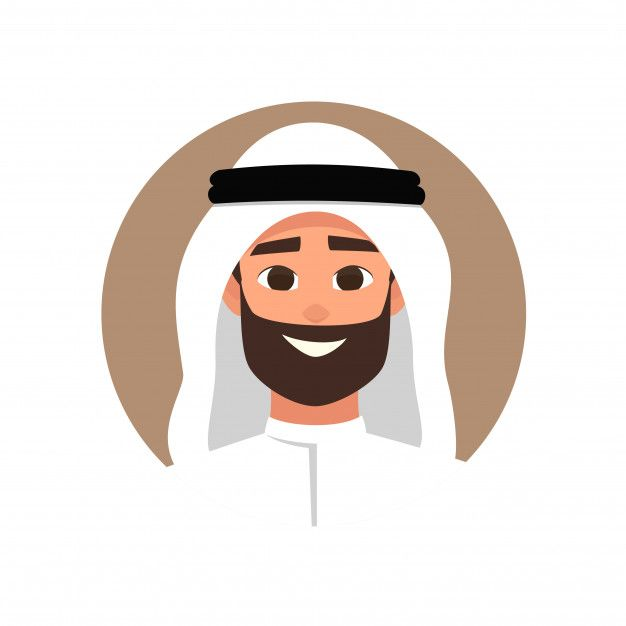

أكثر المتطوعين نشاطاً
تعرف على أبرز المتطوعين في مجتمعنا

أحمد محمد
متطوع في مجال التعليم
الرياض
نبذة: معلم متطوع يهتم بدعم الطلاب في المواد الأساسية ورفع الوعي بأهمية التعليم.
تعليم
طفولة
توعية
تاريخ الالتحاق: 2022-03-15

فاطمة أحمد
متطوعة في مجال الصحة
جدة
نبذة: ممرضة متطوعة في الحملات الصحية والتوعوية لرفع مستوى الوعي الصحي بالمجتمع.
صحة
توعية
خدمات
تاريخ الالتحاق: 2021-09-10

خالد سعيد
متطوع في مجال البيئة
الدمام
نبذة: ناشط بيئي يشارك في مبادرات التشجير وتنظيف الشواطئ وحملات الاستدامة.
بيئة
استدامة
تشجير
تاريخ الالتحاق: 2020-05-22

نورة عبدالله
متطوعة في مجال الإغاثة
مكة المكرمة
نبذة: متخصصة في تنسيق فرق الإغاثة وتوزيع المساعدات في حالات الطوارئ.
إغاثة
تنسيق
لوجستيات
تاريخ الالتحاق: 2019-11-03